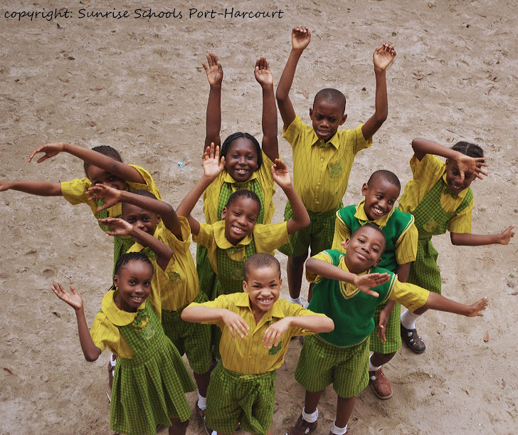

Sunrise Schools

...Rise And Shine
...Rise And Shine
Enviably positioned in the vibrant coastal city of Port Harcourt and nestled within the Kolokuma area of Borikiri in Rivers State, Nigeria, Sunrise School delivers an outstanding, nurturing education from Nursery to Prep school. Frequently recognized by leading educational experts and associations, we are committed to academic excellence, small class sizes, and a pupil-centered approach. Every child receives the personalized care and attention they deserve and need to thrive.
Through our broad curriculum, we create a strong blend of academic, artistic, dramatic, musical and sporting experiences. In addition to timetabled classes in art, dance, DT, drama, music and sport, our extra-curricular programme offers a variety of sessions before, during and after school. Activities include archery, art, boxercise, choir, coding, fencing, golf, Italian, mini-cadets, musical theatre, orchestra, patchwork, sailing, table tennis and water polo.
We offer a safe, convenient, and comprehensive school bus service reaching across Woji, Eastern By-pass, and Garrison. Our school, located at Kolokuma, Borikiri, is easily accessible from all major parts of Port Harcourt, ensuring a stress-free commute for our pupils and parents.